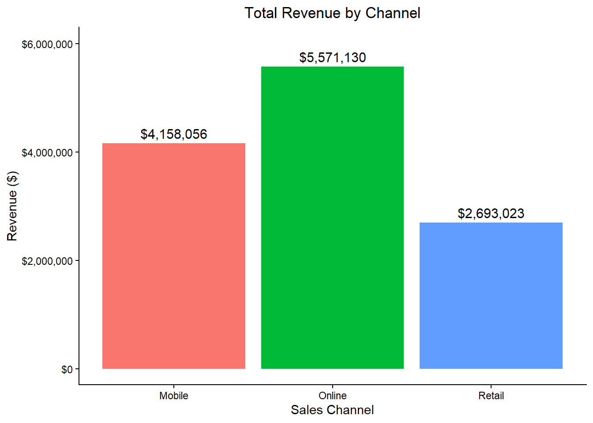
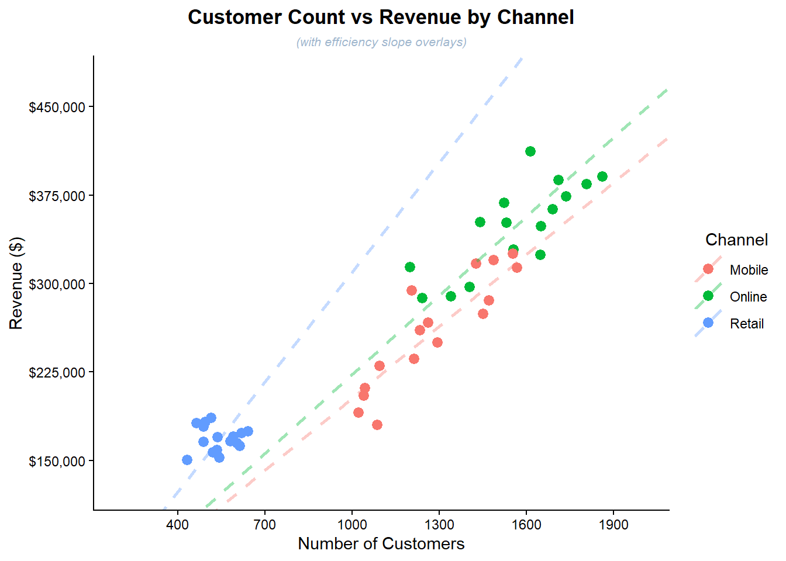

library(ggplot2)
library(scales)
business_data <- read.csv("data/business_performance.csv")
Our data set contains 48 observations and 7 variables, including character, integer, and numeric data types. The variables “quarter” and “channel” are classified as character types. The variables “revenue” and “customers” are stored as integers, ranging from $150,231 to $412,125 and from 433 to 1,861 customers, respectively.
# Inspect structure and summary of data set
str(business_data)## 'data.frame': 48 obs. of 7 variables:
## $ quarter : chr "Q1" "Q2" "Q3" "Q4" ...
## $ channel : chr "Online" "Online" "Online" "Online" ...
## $ year : int 2023 2023 2023 2023 2023 2023 2023 2023 2023 2023 ...
## $ revenue : int 314019 288825 296739 287699 351721 324090 348699 328609 368558 362724 ...
## $ customers : int 1200 1340 1405 1241 1441 1647 1650 1556 1524 1690 ...
## $ conversion_rate: num 3.9 3.4 2.9 3.6 NA 3.8 3.4 3.7 4.3 3.6 ...
## $ region : chr "North" "South" "East" "West" ...summary(business_data)## quarter channel year revenue
## Length:48 Length:48 Min. :2023 Min. :150231
## Class :character Class :character 1st Qu.:2023 1st Qu.:177597
## Mode :character Mode :character Median :2024 Median :263544
## Mean :2024 Mean :258796
## 3rd Qu.:2024 3rd Qu.:324372
## Max. :2024 Max. :412125
##
## customers conversion_rate region
## Min. : 433 Min. :2.300 Length:48
## 1st Qu.: 600 1st Qu.:3.100 Class :character
## Median :1223 Median :3.700 Mode :character
## Mean :1127 Mean :3.849
## 3rd Qu.:1526 3rd Qu.:4.400
## Max. :1861 Max. :6.400
## NA's :3Online is our top-performing channel for revenue, while Q3 typically sees the highest average customer volume.
# calculate revenue and customer totals by channel
revenue_channel <- aggregate(cbind(revenue, customers) ~ channel, data = business_data, sum, na.rm = TRUE)
# calculate revenue and customer averages by quarter
customers_quarter <- aggregate(cbind(customers, revenue) ~ quarter, data = business_data, mean, na.rm = TRUE)
# sort revenues and format values
revenue_by_channel_table <- transform(revenue_channel[order(-revenue_channel$revenue),],
revenue = dollar(revenue, accuracy = 1),
customers = comma(customers, accuracy = 1))
# sort customers and format values
customers_by_quarter_table <- transform(customers_quarter[order(-customers_quarter$customers),],
customers = round(customers, 0),
revenue = dollar(round(revenue, 0), accuracy = 1))
# find best revenue channel total and format values
top_revenue_by_channel <- head(transform(revenue_channel[order(-revenue_channel$revenue),],
revenue = dollar(revenue, accuracy = 1),
customers = comma(customers, accuracy = 1)), 1)
# find best customer channel average and format values
top_customers_by_quarter <- head(transform(customers_quarter[order(-customers_quarter$customers),],
customers = round(customers, 0),
revenue = dollar(round(revenue, 0), accuracy = 1)), 1)
# rename columns for presentation
names(revenue_by_channel_table) <- c("Channel", "Total Revenue", "Total Customers")
# rename columns for presentation
names(top_revenue_by_channel) <- c("Channel", "Total Revenue", "Total Customers")
# rename columns for presentation
names(customers_by_quarter_table) <- c("Quarter", "Average Customers", "Average Revenue")
# rename columns for presentation
names(top_customers_by_quarter) <- c("Quarter", "Average Customers", "Average Revenue")
# generate revenue by channel table
knitr::kable(revenue_by_channel_table, align = rep("l", 3), row.names = FALSE)| Channel | Total Revenue | Total Customers |
|---|---|---|
| Online | $5,571,130 | 24,953 |
| Mobile | $4,158,056 | 20,449 |
| Retail | $2,693,023 | 8,673 |
# generate best revenue by channel table
knitr::kable(top_revenue_by_channel, align = rep("l", 3), row.names = FALSE)| Channel | Total Revenue | Total Customers |
|---|---|---|
| Online | $5,571,130 | 24,953 |
# generate revenue averages by channel table
knitr::kable(customers_by_quarter_table, align = rep("l", 3), row.names = FALSE)| Quarter | Average Customers | Average Revenue |
|---|---|---|
| Q3 | 1173 | $257,629 |
| Q2 | 1154 | $255,322 |
| Q4 | 1111 | $256,191 |
| Q1 | 1069 | $266,042 |
# generate best revenue averages by channel table
knitr::kable(top_customers_by_quarter, align = rep("l", 3), row.names = FALSE)| Quarter | Average Customers | Average Revenue |
|---|---|---|
| Q3 | 1173 | $257,629 |
The channel that generates the most revenue per customer is retail, which delivers nearly 50% more per customer than online or mobile. This suggests that our best practice is to prioritize sales in our retail stores. We should also develop a plan to transition our mobile and online stores to better replicate the retail experience. While we don’t want to lose the broader volume and reach that mobile and online stores provide, or cannibalize retail, they should be optimized. Our generated table presents revenue per customer averages, both unweighted and weighted (adjusted).
# add revenue per customer for each data input to business_data
business_data$revenue_per_customer <- business_data$revenue / business_data$customers
# find revenue per customer by channel averages
unadjusted_revenue_channel <- aggregate(revenue_per_customer ~ channel, data = business_data, mean, na.rm = TRUE)
# totals for each channel
adjusted_revenue_channel <- aggregate(cbind(revenue, customers) ~ channel, data = business_data, sum, na.rm = TRUE)
# calculate adjusted averages by channel
adjusted_revenue_channel$revenue_per_customer_by_channel <- adjusted_revenue_channel$revenue / adjusted_revenue_channel$customers
# format RPC_channel values
unadjusted_revenue_channel <- transform(unadjusted_revenue_channel[order(-unadjusted_revenue_channel$revenue_per_customer),],
revenue_per_customer = dollar(round(revenue_per_customer, 2), accuracy = 0.01))
# format RPC_channel values
adjusted_revenue_channel <- transform(adjusted_revenue_channel[order(-adjusted_revenue_channel$revenue_per_customer_by_channel),],
revenue_per_customer_by_channel = dollar(round(revenue_per_customer_by_channel, 2), accuracy = 0.01))
# rename columns for consistency
names(unadjusted_revenue_channel) <- c("Channel", "Revenue Per Customer (unadjusted)")
# rename columns for consistency
names(adjusted_revenue_channel) <- c("Channel", "Total Revenue", "Total Customers", "Revenue Per Customer (adjusted)")
# combine tables
combined_table <- data.frame(
"Channel" = unadjusted_revenue_channel$Channel,
"Revenue Per Customer (unadjusted)" = unadjusted_revenue_channel$"Revenue Per Customer (unadjusted)",
"Revenue Per Customer (adjusted)" = adjusted_revenue_channel$"Revenue Per Customer (adjusted)")
# rename columns for presentation
names(combined_table) <- c("Channel", "Revenue per Customer", "Revenue per Customer (adjusted)")
# generate combined table
knitr::kable(combined_table, align = c("l", "r", "r"), row.names = FALSE)| Channel | Revenue per Customer | Revenue per Customer (adjusted) |
|---|---|---|
| Retail | $314.22 | $310.51 |
| Online | $224.33 | $223.26 |
| Mobile | $202.81 | $203.34 |
# generate best combined table
knitr::kable(head(combined_table, 1), align = c("l", "r", "r"), row.names = FALSE)| Channel | Revenue per Customer | Revenue per Customer (adjusted) |
|---|---|---|
| Retail | $314.22 | $310.51 |
Our online store generates significantly more total revenue than retail and a moderate amount more than mobile. Based on this visualization, we should be investing the most in retail stores. Although online leads in total revenue, retail’s superior revenue per customer suggests untapped potential. We could invest in scaling up retail stores while replicating the retail experience across our mobile and online channels.
ggplot(revenue_channel, aes(x = channel, y = revenue, fill = channel)) +
geom_bar(stat = "identity") +
geom_text(aes(label = dollar(revenue)), vjust = -0.5, size = 4) +
labs(title = "Total Revenue by Channel",
x = "Sales Channel", y = "Revenue ($)") +
scale_y_continuous(
labels = label_dollar(),
limits = c(0, 6000000)) +
theme_classic() +
theme(legend.position = "none",
plot.title = element_text(hjust = 0.5))
We’ve generated a scatter plot of revenue versus customer count by channel. To clarify the relationship, we’ve added a slope line for each channel, which confirms that retail is the most efficient at converting customer volume into revenue. A steeper slope indicates higher revenue per customer, even though retail and online may appear more efficient at a glance.
# generate slope data for visual analysis
rpc <- aggregate(cbind(revenue, customers) ~ channel, data = business_data, sum)
rpc$rpc_slope <- rpc$revenue / rpc$customers
# generate customized scatter plot
ggplot(business_data, aes(x = customers, y = revenue, color = channel)) +
geom_point(size = 2.75) +
geom_abline(data = rpc, aes(slope = rpc_slope, intercept = 0, color = channel), linetype = "dashed", linewidth = 1, alpha = 0.375) +
labs(title = "Customer Count vs Revenue by Channel",
subtitle = "(with efficiency slope overlays)",
x = "Number of Customers", y = "Revenue ($)", color = "Channel") +
scale_y_continuous(
labels = label_dollar(),
limits = c(125000, 475000),
breaks = seq(0, 450000, by = 75000)) +
scale_x_continuous(
limits = c(200, 2000),
breaks = seq(100, 1900, by = 300)) +
theme_classic() +
theme(plot.title = element_text(hjust = 0.5, face = "bold"),
plot.subtitle = element_text(hjust = 0.5, color = "#9FB6CD", face = "italic", size = 8),
legend.title = element_text(hjust = 1.0))
A professional summary table has been created to present key revenue and customer metrics. Starting with company-wide totals for the period to establish context, followed by each channel’s relative contribution to total revenue and customer volume. The table then details total and average revenue and customer counts per channel, concluding with average conversion rates to illustrate how frequently patrons convert to customers across channels. While a few conversion rate data points are missing, their infrequency ensures the average remains reliable.
# For the year data
total_revenue <- sum(business_data$revenue)
total_customers <- sum(business_data$customers)
average_revenue <- mean(business_data$revenue, na.rm = TRUE)
average_customers <- mean(business_data$customers, na.rm = TRUE)
RPC_year <- total_revenue / total_customers
# conversion rate data
con_rate <- mean(business_data$conversion_rate, na.rm = TRUE)
con_rate_table <- aggregate(conversion_rate ~ channel, data = business_data, mean, na.rm = TRUE)
# customer share data
cust_share <- transform(aggregate(customers ~ channel, data = business_data, sum, na.rm = TRUE),
share = round(100 * customers / sum(customers), 2))
# revenue share data
rev_share <- transform(aggregate(revenue ~ channel, data = business_data, sum, na.rm = TRUE),
share = round(100 * revenue / sum(revenue), 0))
# Averages for each channel
AVG_channel <- aggregate(cbind(revenue, customers) ~ channel, data = business_data, mean, na.rm = TRUE)
# Totals for each channel
revenue_channel <- aggregate(cbind(revenue, customers) ~ channel, data = business_data, sum, na.rm = TRUE)
# Add average revenue per channel without unweighted bias
revenue_channel$revenue_by_channel_per_customer <- revenue_channel$revenue / revenue_channel$customers
# Bold first column for presentation
revenue_channel$channel <- paste0("**", revenue_channel$channel, "**")
# Top row table
summary_table <- data.frame(
"X" = "**For the Period**",
"Total Revenues" = total_revenue,
"Total Customers" = total_customers,
"Average Revenues" = average_revenue,
"Average Customers" = average_customers,
"Revenue per Customer" = RPC_year,
"Conversion Rate" = con_rate,
"Customer Share" = "100",
"Revenue Share" = "100", check.names = FALSE)
# combine 7 tables
channel_table <- cbind(revenue_channel[, -ncol(revenue_channel)], AVG_channel[-1], revenue_channel[-(1:3)], con_rate_table[-1], cust_share[-(1:2)], rev_share[-(1:2)])
# Rename columns to stack tables
names(channel_table) <- c("X", "Total Revenues", "Total Customers", "Average Revenues", "Average Customers", "Revenue per Customer", "Conversion Rate", "Customer Share", "Revenue Share")
# stack tables
executive_summary <- rbind(summary_table, channel_table)
# format currency columns
executive_summary$`Total Revenues` <- dollar(round(executive_summary$`Total Revenues`))
executive_summary$`Average Revenues` <- dollar(round(executive_summary$`Average Revenues`))
executive_summary$`Revenue per Customer` <- dollar(round(executive_summary$`Revenue per Customer`))
# format rate columns
executive_summary$`Conversion Rate` <- round(executive_summary$`Conversion Rate`, 2)
executive_summary$`Customer Share` <- paste0(round(as.numeric(executive_summary$`Customer Share`), 0), "%")
executive_summary$`Revenue Share` <- paste0(round(as.numeric(executive_summary$`Revenue Share`), 0), "%")
# format customer count columns with commas
executive_summary$`Total Customers` <- comma(round(executive_summary$`Total Customers`))
executive_summary$`Average Customers` <- comma(round(executive_summary$`Average Customers`))
executive_summary <- executive_summary[, c(
"X",
"Revenue Share",
"Customer Share",
"Total Revenues",
"Average Revenues",
"Total Customers",
"Average Customers",
"Revenue per Customer",
"Conversion Rate")]
# rename column for presentation
names(executive_summary)[1] <- ""
# generate executive table
knitr::kable(executive_summary, align = rep("l", 8), row.names = FALSE)| Revenue Share | Customer Share | Total Revenues | Average Revenues | Total Customers | Average Customers | Revenue per Customer | Conversion Rate | |
|---|---|---|---|---|---|---|---|---|
| For the Period | 100% | 100% | $12,422,209 | $258,796 | 54,075 | 1,127 | $230 | 3.85 |
| Mobile | 33% | 38% | $4,158,056 | $259,878 | 20,449 | 1,278 | $203 | 2.88 |
| Online | 45% | 46% | $5,571,130 | $348,196 | 24,953 | 1,560 | $223 | 3.64 |
| Retail | 22% | 16% | $2,693,023 | $168,314 | 8,673 | 542 | $311 | 5.03 |
Our analysis of revenue, customer volume, and conversion rates reveals meaningful differences in channel efficiency. Retail stores deliver the highest revenue per customer ($311) and strongest conversion rate (5.03%), despite lower traffic (16% share) and revenue (22% share). Recommend reallocating 15% more marketing spend to retail stores to capitalize on their efficiency and drive incremental gains. Monitor performance quarterly to validate return on investment and adjust as needed.